Integrals¶
Warning
This chapter assumes that you have a good grasp of derivatives, including
the ability to recognize that  is a derivative whenever you
see it. I highly recommend reading the derivative tutorial
first.
is a derivative whenever you
see it. I highly recommend reading the derivative tutorial
first.
There are many practical ways to use derivatives like the game at the end of the derivative chapter demonstrates. You probably won't find as many practical uses for this chapter as other derivative stuff, but you may find the math itself just amazing.
The Problem¶
Here's a picture of a few areas:
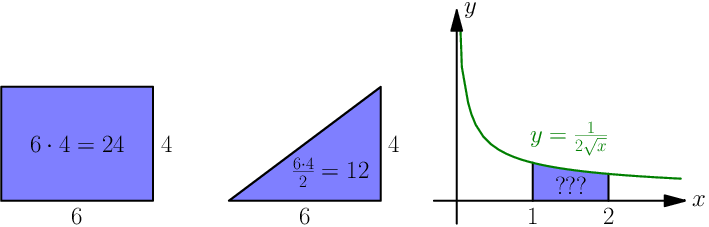
The first two areas are easy to calculate and everything is quite self-explanatory, but how the heck are we going to do the third one?
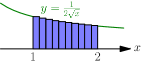If this was a question on a codeacademy-like noob programming site you would
probably write some code that approximates the area by calculating areas of
little rectangles. This Python program prints 0.42167045099417744:
import math
def f(x):
return 1/(2 * math.sqrt(x))
slice_width = 0.1
result = 0
x = 1
while x < 2:
result += slice_width * f(x)
x += slice_width
print(result)
The answer is not too bad and we could make it much better by adjusting
slice_width, but I calculated the same area on paper by hand in about
10 seconds and I got a precise answer instead of a decimal approximation.
This chapter is all about how I did that and why it works.
Area to x¶
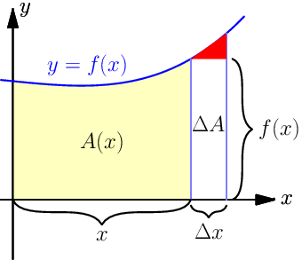Let's say that our curve is of the form  where
where  is a
continuous
function. Maybe we could find out what the area
is a
continuous
function. Maybe we could find out what the area  is under the curve
between 0 and
is under the curve
between 0 and  ?
?
Let's imagine that we choose some location and move it right by  .
Then the area grows by a slice of width and height
.
Then the area grows by a slice of width and height  . If we
assume that the slice is a rectangle we get a small error (red triangle in
image), but we can calculate the slice's area
. If we
assume that the slice is a rectangle we get a small error (red triangle in
image), but we can calculate the slice's area  with the rectangle
formula:
with the rectangle
formula:
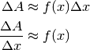
Now if we make the infinitely tiny, the red triangle is so small
compared to that we can ignore it:
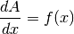
Yes, this is correct! We can use a derivative here. This is precise, so we can
get rid of  and replace it with
and replace it with  .
.
So, if we want to calculate areas all we really need is an antiderivative
function so that  , and
, and  will be an area to .
will be an area to .
Our First Integral¶
Let's go back to our original problem. One of our derivative rules was this:

So it looks like the antiderivative function is 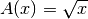. But how
about 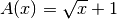? Its derivative is also  because
because  . Or how about
. Or how about  or
or  ?
We don't know what is, but we know that 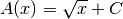 where
?
We don't know what is, but we know that 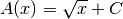 where  is a constant.
is a constant.
Let's try to calculate our area:
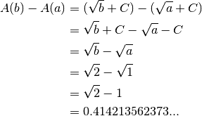
That's all there is to it!  is the precise area. I think this is
awesome.
is the precise area. I think this is
awesome.
This took quite a while because we went through all the steps needed to
understand everything, but now that you have seen this once you can do it much
faster. So, here are the steps for calculating the area under between
 and
and  :
:
- Find an antiderivative . There are infinitely many antiderivatives,
but any antiderivative will do because the 's are substracted away.
- Calculate 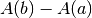 and you're done.
This connection between antiderivatives and areas is also known as the fundamental theorem of calculus.

Notation¶
Usually this stuff is written like this:
- The blue area in the image at right is
 . Be careful
here – the
. Be careful
here – the  is just a part of the notation and you must not forget
it.
is just a part of the notation and you must not forget
it. - The antiderivative of including the
 is the same thing without
is the same thing without
 and
and  . So 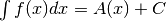 where
. So 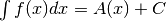 where  .
. - 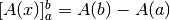.
The integral sign  is a strecthed S like Sum, and
means conceptually a sum of the areas of little by rectangles.
is a strecthed S like Sum, and
means conceptually a sum of the areas of little by rectangles.
For example, with this notation, our thing can be
calculated with very little paper like this:

This is how I did it in just a few seconds. Note that you can leave out the
when calculating areas, but you should include it when calculating
antiderivatives.
Integral Rules¶
You can turn derivative rules into integral rules by
applying  on both sides. Keep in mind that
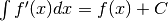 and 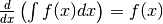
because means antiderivative. For example:
on both sides. Keep in mind that
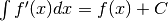 and 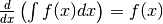
because means antiderivative. For example:
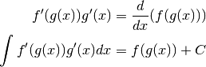
Here are some handy results of calculations like the one above. Note that
and  are different or use better variable names than I did. You can check
these easily by finding the derivative of the right side; it should always be
whatever is between and on the left side.
are different or use better variable names than I did. You can check
these easily by finding the derivative of the right side; it should always be
whatever is between and on the left side.
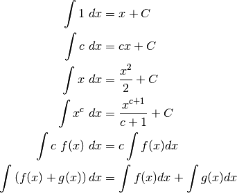
Note that there's no formula for integrating 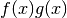 unless there's
something special going on, e.g. one of and  is a constant.
is a constant.
In our first example I chose just because we know it's
the derivative of  . But now we know how to integrate stuff like
. But now we know how to integrate stuff like
 as well. For example:
as well. For example:
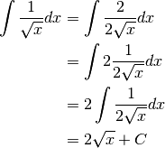

We can also do but we need to know that
 . I didn't cover this on
the basics page but it's quite straight-forward to understand;
the
. I didn't cover this on
the basics page but it's quite straight-forward to understand;
the  is below two division lines so it must be different from being below
just one division line. It's a mess and checking the answer with a derivative
is also a mess, but it works.
is below two division lines so it must be different from being below
just one division line. It's a mess and checking the answer with a derivative
is also a mess, but it works.
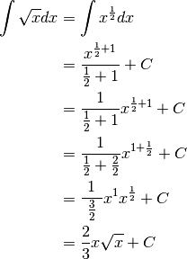

Example: Smooth Jumps Revisited¶
We learned to make a game where a ball jumps in the shape of parabola in
this derivative example. We somehow
guessed that the natural jumping curve might be a parabola. But now we know how
to get from  being a constant to a parabola. I won't explain things much;
I'll just assume that you have read the derivative thing linked above.
being a constant to a parabola. I won't explain things much;
I'll just assume that you have read the derivative thing linked above.
Note
Here  and
and  mean velocity and height at time
mean velocity and height at time  . I'm doing that
instead of plain
. I'm doing that
instead of plain  and
and  to remind us about the fact that they aren't
just constants; they depend on the time. However, is just a constant.
to remind us about the fact that they aren't
just constants; they depend on the time. However, is just a constant.
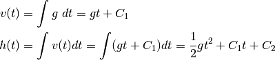
Now if we rename the constants so that  ,
,  and
and
 we get
we get  , and that's the equation of a parabola.
, and that's the equation of a parabola.
Example: Circle Area¶
Note
This section assumes that you know what  and radians are.
Click here if you don't.
and radians are.
Click here if you don't.
At some kind of school you may have learned that the area of a circle is
 where 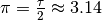 and
where 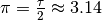 and  is the radius of
the circle. There are a few different ways to divide a circle into a bunch of
smaller and simpler areas and show that the total area is indeed
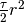:
is the radius of
the circle. There are a few different ways to divide a circle into a bunch of
smaller and simpler areas and show that the total area is indeed
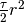:
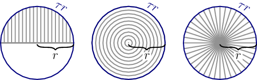
The idea here is that we can calculate the area of a circle by just integrating a bunch of these little area slices. The first one is the most difficult to integrate, but the second and third one are something we can do. Let's do the second one.
We already used to represent the radius of our blue circle, so let's use
another letter like  to represent the radius of one of the rings between the
gray lines. When integrating vertical slices the area of a slice was
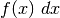, but this time it's 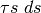 where and 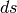 are the
perimeter and thickness of the rings. This is quite straight-forward:
to represent the radius of one of the rings between the
gray lines. When integrating vertical slices the area of a slice was
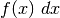, but this time it's 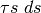 where and 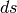 are the
perimeter and thickness of the rings. This is quite straight-forward:
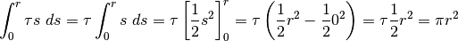
In general, if you see something like  it's possibly the result
of some integration because
it's possibly the result
of some integration because  .
The form kind of hides the integration because
.
The form kind of hides the integration because  ,
but rewriting it with makes everything clear.
,
but rewriting it with makes everything clear.
The derivative of the area is also interesting. It turns out that it's always
equal to the perimeter  :
:
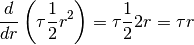
This makes sense because if we increase , the perimeter length determines
how much the area increases.
Going 3D¶
Problem
If the VLC Media Player cone is 200 pixels high, its radius is 50 pixels and it's 3-dimensional, how many pixels fit inside the cone?

The image comes from this wikimedia page.
{kind=link}

Here has nothing to do with antiderivatives, it's just the Area of the
green circle in the image at right.
Integrals are not actually limited to calculating areas in any way. If you look
at the image, the total volume is 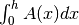. Now we just need to
figure out how to calculate the , and for that we need to know what
is. Here's everything we know about :
- The graph is a straight line, so the derivative must be a
constant.
- When
 , the cone's radius is
, the cone's radius is  .
. - When 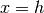, the cone's radius is .
So, we get these equations:
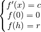
This isn't difficult to solve by just doing it one thing at a time, but I'll skip that because it's boring. Here's the solution:
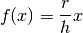
Next we need . In the previous example we figured that the area of a
circle is 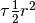 where is the radius, but the green circle's
radius is instead of so 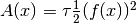. Let's do
this:
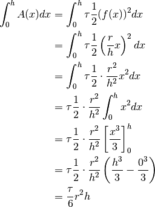
That was a mess, but we're almost done! Now we can just plug in  and
and
 to get our cone volume.
to get our cone volume.
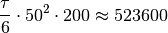
That's quite a few pixels.